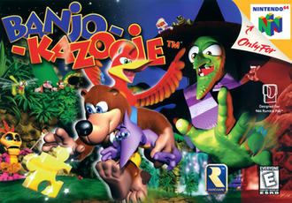
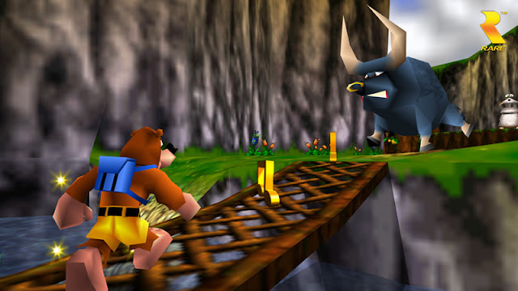

Banjo-Kazooie is a platform video game developed by Rare and originally released for the Nintendo 64 console in 1998.
What the game is about
Banjo-Kazooie is a single-player platform game where the player controls the protagonists Banjo and Kazooie from a third-person perspective. The game features nine three-dimensional worlds where the player must gather musical notes and jigsaw pieces, called Jiggies, to progress. The player travels from one world to another through Gruntilda's Lair, a region that acts as the game's central overworld. Jiggies allow the player to complete jigsaw puzzles which open doors to new worlds, while musical notes allow the player to access new sections of the overworld. Like Super Mario 64, Banjo-Kazooie is very open and allows the player to collect Jiggies and musical notes in a nonlinear order. It is also possible to complete certain worlds out of order, assuming the player has enough Jiggies and musical notes to reach a world earlier than intended.
 Click here to find out more.